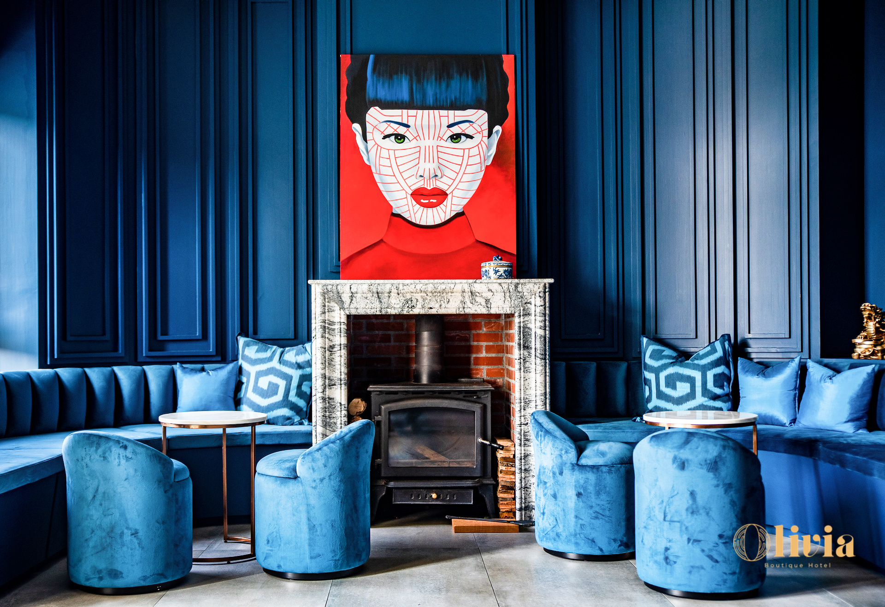

生活片段
關於空間，也關於生活如何被安放。
奧莉薇雅生活小酒店，源自一位母親與女兒共同完成的生活想像。這裡不是被建造的旅館，而是一段被實現的日常。
起點
一段關於愛與生活的建築。
奧莉薇雅，誕生於一個簡單卻深刻的起點——一位母親，為她的女兒打造一個理想中的生活空間。
她們把對生活的想像、對美的理解、對時間的感受，一點一點地轉化為這棟建築，讓空間不只是存在，而是被感受。

理念
旅行，不只是停留。
在奧莉薇雅，旅行從來不是「過夜」。它是一種生活的延伸，是在不同時間與空間中，重新看見自己的方式。
光線、餐桌、氣味、材質與靜默，都被安排成一種節奏，讓人慢慢回到生活本身。
生活篇章
十種情感，十種生活的樣子。
喜樂、渴望、寵愛、秘密、愛、柏拉圖、真我、情事、勇氣與永恆，不是房型分類，而是每個人在生命中曾經走過或正在經歷的狀態。
你不是選擇一間房，而是走進一種當下的自己。
Joy喜樂
Desire渴望
Adore寵愛
Secret秘密
Love愛
Plato柏拉圖
Truth真我
Affair情事
Courage勇氣
Eternity永恆
生活
一種更慢的生活方式。
在這裡，早晨不是開始，而是一種延續。你會在光線裡醒來，在餐桌旁停留，在午後與自己相處，然後讓時間慢慢變得柔軟。

